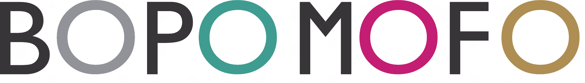
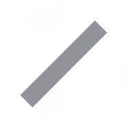
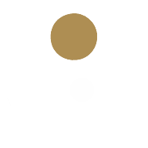

臺灣獨有的一套符號
注音符號不僅是臺灣獨有的語言學習系統，更承載著多數人成長過程中的共同記憶。然而在全球化語境下，注音長期被視為教育工具，缺乏與當代生活及國際文化溝通的連結。
Zhuyin is a language learning system unique to Taiwan, and a memory most people here share. Yet it has long been seen as a mere educational tool.



BOPOMOFO 將臺灣獨特的注音符號轉譯為現代視覺語言。
Explore Taiwanese culture through Bopomofo: 37 symbols, 4 tones, 60 words of food, places and everyday objects.
注音符號不僅是臺灣獨有的語言學習系統，更承載著多數人成長過程中的共同記憶。然而在全球化語境下，注音長期被視為教育工具，缺乏與當代生活及國際文化溝通的連結。
Zhuyin is a language learning system unique to Taiwan, and a memory most people here share. Yet it has long been seen as a mere educational tool.
標誌由注音「ㄅ」出發，經旋轉、鏡射與重組，形成連續的圖騰結構。符號不再只代表發音，而是成為視覺設計的基本單元。
The mark starts from ㄅ. Rotated, mirrored and recombined, the symbol becomes a unit of visual design.
BO、PO、MO、FO 的 O 分別藏著平、上、去、入四聲。四種顏色也成為整個系統的色彩：灰、青、紅、金。
Each O in BO·PO·MO·FO carries one of the four tones, and each tone has its own colour.
標誌、BOPOMOFO 字標與 TAIWANESE PATTERN DESIGN 副標，可依版面需求組成直式、橫式與兩行等不同版本，應用在書封、周邊與數位媒材上。
The mark, the BOPOMOFO logotype and the tagline combine into vertical, horizontal and two-line lockups for different layouts.
我們將外型相似的注音符號融合重組，發展成圖騰化的單位圖形，並結合臺灣在地文化意象進行轉化，成為具現代美學的連續圖形。
Similar-looking symbols are fused into nine unit motifs, then tiled into continuous patterns.
來臺灣的外國旅客：看見注音、產生好奇、建立指認與理解。Visitors to Taiwan: see Zhuyin, get curious, learn to recognise and understand it.
建立一套可被看見、被使用、被帶走的注音文化體驗。A Zhuyin culture experience people can see, use and take home.
將臺灣限定的注音符號，轉譯為外國旅客能指認、能互動、能帶走的視覺體驗。Turning Taiwan’s own Zhuyin into a visual experience visitors can recognise, interact with and take home.
臺灣紅、臺灣青、臺灣金，三種顏色對應食、景、物三個章節，在整個網站中作為分類色使用。Taiwan Red, Teal and Gold mark the Food, Scenery and Objects chapters across the site.
色彩參考來源：egretfnd.org.tw
每一個圖形，都由 2～3 個外型相似的注音融合而成。Each motif fuses two or three Zhuyin symbols with similar shapes.
點選任一圖形Tap a motif找出用到這些注音的食・景・物詞彙 →to find words that use these symbols
21 個聲母、3 個介音、13 個韻母。點一下符號翻面，看羅馬拼音。21 initials, 3 medials and 13 finals. Tap a symbol to flip it for its pinyin.
拿起手指或滑鼠，照著淡淡的字描一描，再自己寫寫看。寫完交給老師蓋章！Trace the faint symbols with your finger or mouse, then try on your own. Hand it in for a stamp!
打一個詞或一句話，馬上看到它的注音和拼音，再翻成英文。Type a word or sentence to see its Zhuyin and pinyin, then its English meaning.
夜市小吃、廟口神明、天燈和燈籠，全都堆在這裡。挑一樣，看看它的注音和故事。Street food, temple gods, sky lanterns and more, all in one pile. Pick one to see its Zhuyin and story.
點一下，看看它的注音和故事Tap one to see its Zhuyin & story
點書頁右半翻下一頁、左半翻上一頁；鍵盤 ← →；手機可左右滑。Tap the right half for the next page, the left half to go back; arrow keys or swipe also work.
在左邊的格子裡拖曳注音，排出一格圖案；右邊會即時把它變成連續印花，並套到商品上預覽。Drag Zhuyin into the cell on the left to design one tile; the right side repeats it into a pattern and previews it on products.
在左上虛線格裡排列，其他格會自動對稱Arrange inside the dashed top-left cell; the rest mirrors automatically
點色塊可任選顏色，或直接用下面的快速配色Tap a swatch for any colour, or use a preset below
商品為模擬示意，實際印刷效果以成品為準。Mock-ups for illustration; actual prints may vary.
在實驗室排好印花，按「發布到作品牆」就會出現在這裡。左右滑動看看大家的作品。Post a pattern from the lab and it appears here. Swipe to see everyone’s work.
六款注音印花的動態版本，滑過就會自己播放。點一下可以放大觀看。Six Zhuyin patterns in motion. They play as you scroll; tap one to watch it larger.
左右滑動挑一張，點中間那張看完整動畫Swipe to pick a card, tap the centre one to watch
移動手指或滑鼠，用放大鏡看看細節Move your finger or mouse to look closer
透過吊飾、自組飾品與 NFC 明信片等周邊，把注音符號帶進日常生活。滑過商品切換視角。